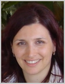

|
|

We are very proud to present this years’s invited speakers to
you. They are coming
from all over the world to present their research in various topics,
from solid state
physics to astrophysics and cosmology. Here you can find out who they
are and what they will be talking about. We encourage you to get to
know them even better during the conference. |
Klaus von Klitzing
Max Planck Institute for Solid State Research, Stuttgart, Germany
Title: "Modern Nanoelectronics"
Time: Thursday, August 13th, 12:00h
Abstract:
After the nanotechnology initiative in the US many countries
started a nanoscience program with the result that the number of patent
applications with the appendix “nano” increased drastically.
An analysis of patent families in this field show that nanoelectronics
plays an important role. The talk will concentrate on experimental techniques
which may be important for nanoelectronic devices supplementing the roadmap
in microelectronics.
It is generally accepted, that the scaling law for the
miniaturization of microelectronic devices breaks down if the wave nature
and the discrete charge of electrons or tunneling phenomena dominate the
electronic properties. These quantum phenomena, which are typical for
nanodevices, do not mark the end in the miniaturization of devices but
open the possibility to create new devices with new functions where for
example the energy quantization of electrons in confined structures, tunnel
phenomena through barriers and single electron charging of small islands
play an important role. The roadmap in nanoelectronics mentions new devices
like resonant tunneling diode, single electron transistor, quantum cellular
automata or nanotube devices. Up to now it is not clear, whether the top-down
process in miniaturization will be successful in nanoelectronics or whether
molecular systems and self-organized structures will be combined with
standard CMOS technology.
Carbon based materials (nanotubes, buckey balls, graphene)
seem to be an interesting building block for applications in nanoelectronics
and some new developments in this field will be presented. The main part
of the talk will discuss the most important technologies for the preparation
of semiconductor nanostructures and the new properties of these devices
if quantum phenomena become important.
About our speaker:
Klaus von Klitzing is a Director and Scientific Member
at the Max Planck Institute for Solid State Research in Stuttgart (since
1985). He was born in 1943 in Schroda, studied physics at Braunschweig
Technical University, and received his doctorate at Würzburg University
in 1972.
He was awarded the 1985 Nobel Prize in Physics "for
the discovery of the quantized Hall effect". In his honor, the fundamental
constant h/e^2 has been designated as the Von Klitzing constant.
His research focuses on experimental semiconductor physics,
low dimensional electron systems, nanoelectronics and molecular quantum
structures.

Leandra Vranješ Markić
University of Split, Split, Croatia
Title: "Fascinating superfluidity: from
nanoscopic clusters to supersolids"
Time: Monday, August 17th, 12:00h
Abstract:
Helium clusters are very weakly bound quantum systems,
especially interesting because they can be used as cold matrices for molecular
spectroscopy and because they serve as microscopic probes of superfuidity.
The talk will review some of the progress in the field and give some examples
on the studies of stability limits of small quantum clusters performed
at the University of Split.
New properties of matter result as a consequence of
confinement. Examples will be given for helium adsorbed in carbon nanostructures.
Finally, the evidence for a "supersolid",
an exotic state of matter that behaves simultaneously as a solid and a
friction-free superfluid, will be reviewed.
About our speaker:
Leandra Vranješ Markić is assistant professor
of physics at the Department of Physics, Faculty of Science in Split.
She works in the field of quantum fluids and solids using Quantum Monte
Carlo simulations. Her main focus are stability limits of quantum clusters,
as well as properties of bulk liquid helium and isotopes of spin-polarized
hydrogen. She has also been studying properties of quantum fluids under
confinement, achieved by adsorption on surfaces and in carbon nanostructures.
Daniel Denegri
Atomic Energy Commission, Saclay, France
Title: "The LHC project, final preparations
and the expected first physical results"
Time: Friday, August 14th, 12:00h
Abstract:
With the start-up of the LHC being imminent, we present
the current status of the machine, with the modifications and improvements
done over the last year, and the expectations for the near future. The
CMS experiment is in the very final stages of commissioning and is ready
for a long cosmic rays run over the summer and will be fully ready for
data taking in October.
The present status of the detector will be discussed as well
as the potential upgrades considered and work initiated for the Super-LHC
phase foreseeable for ~ 2015.
About our speaker:
Professor Daniel Denegri began his career in the United States
after graduating physics in Zagreb in 1964. He has worked at the Centre
for Atomic Energy at Saclay since 1976. His most important scientific
contributions are those related to CERN: he contributed in the discovery
of W and Z bosons and in the design of the CMS detector for the LHC accelerator.
His work made it possible for the University of Split to enter some of
the projects at CERN. In 1989 he was awarded the "Prix Joliot Curie"
prize for his scientific contributions. He continues to work not only
as a scientist but a big promotor of physics in everyday life.
Peter L. Biermann
Max Planck Institute for Radioastronomy, Bonn, Germany
Title: "Ultra high energy particles and cosmic ray electrons/positrons,
from massive star explosions"
Time: Sunday, August 16th, 12:00h
Abstract:
Particles near 10^20 eV are the most energetic particles
known to us in the Universe, also called ultra high energy cosmic rays.
Events have been detected of an energy up to 3x10^20 eV, which is a macroscopic
energy. Independently, new components of cosmic ray electrons and positrons
have been detected. Here we attribute all of these particles to the acceleration
of charged particles in magnetic stellar winds. Considering all of 4*pi
around a star with such a wind, over most of 4*pi the magnetic field is
nearly tangential, while in the polar cap the magnetic field is radial.
This leads for the polar cap component to a flatter spectrum, and also
to more interaction. This in turn gives enhanced production of secondary
particles such as positrons. The now abundant observations are readily
and quantitatively interpreted with the action in magnetic stellar winds.
On the other hand, when two galaxies merge, and their central
black holes then also merge, the resulting spin of the final black hole
is flipped around: Then a newly oriented relativistic jet can race through
a region of a starburst induced as a first stage of the merger, when many
massive stars form and explode. This propels the polar cap components
of cosmic rays to very much higher energy, while obeying at the same time
the Poynting flux limit constraint for active galactic nuclei. This then
may explain the Auger data as due to the action of the relativistic jet
in the radio galaxy Cen A. Coming from both low energy and high energy,
we thus may have a contribution to a coherent and quantitative physical
theory for the origin of cosmic rays.
This work is a collaboration with many other people, as listed
in the papers below.
[1] Active Galactic Nuclei: Sources for ultra high energy
cosmic rays?, Biermann, P. L., Becker, J. K., Caramete, A. Curutiu, L.,
Engel, R., Falcke, H., Gergely, L. A., Isar, P. G., Maris, I. C., Meli,
A., Kampert, K. -H., Stanev, T., Tascau, O., Zier, C., invited review
for the conference CRIS2008, Malfa, Salina Island, Italy, Ed. A. Insolia,Nucl.
Phys. B, Proc. Suppl. 190, 61 - 78 (2009); arXiv: 0811.1848v3
[2] Neutrinos from active black holes, sources of ultra high energy cosmic
rays, J.K. Becker & P.L. Biermann, ApP 31, 138 (2009); arXiv:0805.1498
[2] Supermassive black hole mergers, L.Á. Gergely, P.L. Biermann,
ApJ 697, 1621 - 1633 (2009); arXiv:0704.1968v3
[3] Active Galactic Nuclei with Starbursts: Sources for ultra high energy
cosmic rays?, P.L. Biermann, J.K. Becker, L. Caramete, L. Á. Gergely,
I. C. Mari¸s, V. de Souza, T. Stanev, invited talk, "High-Energy
Gamma-rays and Neutrinos from Extra-Galactic Sources", Heidelberg
Jan 2009, (in press) 2009; arXiv:0904.1507
[4] New limits on Sterile Neutrinos from Suzaku Observations of the Ursa
Minor Dwarf Spheroidal galaxy, M. Loewenstein, A. Kusenko, P.L. Biermann,
ApJ 700, 426 - 435 (2009); arXiv:0812.2710
[5] Cosmic Ray Electrons and Positrons from Supernova Explosions of Massive
Stars, Biermann, P.L., Becker, J.K., Meli, A., Rhode, W., Seo, E. -S.,
Stanev, T., in press Phys. Rev. Lett (2009); arXiv:0903.4048
[6] No observational constraints from hypothetical collisions of hypothetical
dark halo primordial black holes with galactic objects,M. A. Abramowicz,
J.K. Becker, P.L. Biermann,A. Garzilli, F. Johansson, L.Qian, submitted
toApJ (2008), arXiv:0810.3140
[7] Cosmic Rays VI - Starburst galaxies at multiwavelengths, J.K. Becker,
P.L. Biermann, J. Dreyer & T.M. Kneiske, submitted to AA (2009); arXiv:0901.1775
About our speaker:
Peter L. Biermann is retired, and was head of the theory
group at the MPI for Radioastronomy in Bonn. He is also professor at the
University of Bonn, Bonn, Germany, at the University of Alabama, Tuscaloosa,
AL, USA, as well as at the University of Alabama at Huntsville, AL, USA
(in all three cases as an adjunct).
He also works closely with the colleagues in Karlsruhe. His
web-page is www.mpifr-bonn.mpg.de /div/theory, which outlines the research
activities. The group and its scientific activities continue now in a
networking mode: this is easy since many of his former academic pupils
are now professors, teach at a university or research institution and
have their own research groups. This is a worldwide distribution, with
about half of them outside Europe. To use a family metaphor, he is scientific
great-grandfather already in two countries, and one can expect this to
widen and deepen further over time.
Just the 2009 papers from him and his collaborations involve
dark matter, primordial black holes, general relativity, galaxy physics,
and cosmic ray physics at all energies. His latest paper will soon appear
in Physical Review Letters, on cosmic ray electrons and positrons.
Stuart A. Cunningham
National Oceanography Centre, Southampton, United Kingdom
Title: "Oceans of Opportunity (Tickling
the dragon’s tail)"
Time: Tuesday, August 11th, 19:00h
Abstract:
Equatorward of 30° latitude the Earth gains heat from
the sun. The most significant manifestation of our climate is the combined
atmosphere-ocean circulations transporting energy poleward, balancing
the net radiative heating in the equatorial regions. Rates of atmosphere-ocean
circulation and their interaction determine our local climates. In this
talk I focus on the ocean circulation. In the Atlantic Ocean warm surface
waters flow poleward and are converted to cold dense waters in the Arctic
Ocean, which then flow equatorward, at depths between one and five kilometres.
This is known as the meridional overturning circulation (MOC) and is sometimes
known colloquially as the conveyor belt circulation. One consequence of
the MOC is that western Europe has a mild climate for its latitude, influenced
at seasonal and longer timescales by the Atlantic ocean circulation. Rapid
changes in MOC strength are evident in the historical climate record (particularly
during glacial times) and these have a profound impact on climate, locally
and globally. Energy transports associated with the equilibrium circulation
are modulated by atmosphere-ocean interactions at high latitudes where
worryingly ice melt, increasing precipitation, river run-off and heating
are acting to reduce the strength of the overturning. State-of-the art
coupled climate models suggest a slowing of the MOC by 25% over the next
five decades, with a proportional decrease in the northward energy flux.
In 2004 we began a novel and ambitious observational programme
across the full width of the Atlantic at 26.5°N. Our goal is to continuously
measure the strength, structure and energy transport of the MOC providing
baseline observations against which future changes may be identified and
providing initial conditions for decadal climate forecasts.
I hope that this talk will introduce you to the large-scale
ocean circulation, explore one aspect of its interaction with climate,
and leave you with an appreciation of important and exciting opportunities
in oceanography.
About our speaker:
Dr. Cunningham’s personal research interest is the
role of oceans in climate. He is a physical oceanographer and specialises
in making observations of ocean circulation at sea. He has participated
in around thirty scientific research cruises - about 2.5 years at sea
over the past fifteen years in the Altantic, Indian, Pacific and Southern
Oceans as well as marginal seas like the Mediterranean. He finds seagoing
exciting and challenging and most of all he enjoys working with oceanographers
from all round the world.
Hendrik Ferdinande
Ghent University, Ghent, Belgium
Title: "A discipline approach to the Bologna reforms:
the case of physics"
Time: Wednesday, August 12th, 12:00h
Abstract:
The physics discipline has been quite active in student mobility
even before the start of the Bologna process. Indeed a successful ’European
Mobility Scheme for Physics Students’ (EMSPS) was established already
in 1992 in the frame of the Erasmus programme with the support of the
EPS. Hence more than 100 participating institutions gained quite good
insight into the structure of the physics studies when organising the
student exchanges. A thematic evaluation conference in 1995 gave start
to a sustainable network, European Physics Education Network (EUPEN) of
more than 100 physics departments in more than 30 countries to co-operate
in different projects [EUPEN (1996/2003), STEPS (Stakeholders Tune European
Physics Studies)(2005/2008) and STEPS-TWO (2008/2011)] taking along the
aims and goals of the Bologna declaration. Close collaboration with the
’Tuning Educational Structures in Europe’ initiatives subject
specific competences were developed and ’Reference Points for the
Design and Delivery of Degree Programmes in Physics’ were obtained.
A recent (2008) investigation by EPS, executed with the help of INCHER,
Universität Kassel (DE), ’The implementation of the Bologna
Process into Physics Studies in Europe’ gave the status of the degree
structure in the physics bachelor programmes in more than 150 institutions
in some 24 Bologna signatory countries. This project will be continued
looking at the masters programmes in 2009 and with the doctorate studies
in 2010. Recently a document was drafted ’Specification Description
for European Physics Bachelor Studies’ describing the characteristics
of the physics study programmes in a European dimension. Results of the
preliminary outcomes will be presented in the frame of the follow-up beyond
2010.
About our speaker:
Hendrik Ferdinande (Belgium, 1940) studied engineering physics
(1963) at Universiteit Gent, Belgium. He obtained an MSc degree from Stanford
University, Stanford (US) in 1964 and was conferred an engineering physics
doctor’s degree in 1973 at Universiteit Gent. From 1964 he performed
research in experimental low- and medium-energy nuclear physics in Ghent
(BE). During the academic year 1973/74 he was NATO visiting researcher
at the National Research Council of Canada in Ottawa (CA). Since 1991
he is lecturer and senior lecturer at the Faculty of Sciences and the
Faculty of Applied Sciences in Universiteit Gent. From 1996 till 2003
he was the chair of the SOCRATES Thematic Network Project EUPEN (European
Physics Education Network) linking more than 150 physics departments in
almost 30 European countries. Hendrik Ferdinande is a fellow of the Institute
of Physics, London (UK) and fellow of the World Innovation Foundation.
He has been active, both as expert in the Physics Area and as member of
the Management Committee in the ’Tuning educational structures in
Europe’ project since the start in 2000. He contributed to initiatives
of Tuning in Russia, Latin America (Peru) and Georgia. In 2002 he received
the doctor honoris causa degree from the Universitatea din Oradea in Oradea
(RO) and was accepted there as associated professor. He retired from Universiteit
Gent in October 2005. He co-ordinated also three-year SOCRATES Thematic
Network Project (2005/2008), called STEPS (Stakeholders Tune European
Physics Studies), run by the enlarged EUPEN Consortium of 161 physics
departments from 37 European countries, plus 10 associated local, national
or regional professional or student organisations.
Silvia Tomić
Institute of Physics, Zagreb, Croatia
Title: "Complex and nonlinear dynamics of charge and
spin structures"
Time: Tuesday, August 11th, 12:00h
Abstract:
Strong Coulomb interactions are essential for collective
electronic states in synthetic conductors and superconductors, e.g. in
organic (molecular) as well as in transition metal oxides, which are established
in the wide temperature range from 250 K down to lowest attainable temperatures.
These states, like charge and spin-density waves, charge orderings of
various types and orbital orderings, show rich range of nonlinear properties
and complex dynamics which connects them with self organized structures
of biological makromolecules - biomaterials. Although biological molecular
systems function in water environment at around room temperature, the
recently developed understanding indicates that Coulomb interactions are
so strong that the diversity of phenomena is comparable to the richness
of the low-temperature physics. In this lecture, I will describe the conventional
spin density wave phase stabilized in the quasi-one-dimensional organic
superconductor [1] and the exotic charge density wave phase formed in
the spin ladders of quasi-one-dimensional cuprates [2]; both of them showing
complex and nonlinear dynamics in their response to the applied electric
fields. At the end I will show how the characterization of complex dynamics
displayed by biopolymers, like genomic DNA in aqueous solutions, gives
information on their structure and associated biological activity [3].
[1] S. Tomić et al., Phys.Rev.Lett. 62 (1989) 462.;
P. Zornoza et al., Eur. Phys. J. B 46, 223 (2005).
[2] T. Vuletić et al., Phys.Rev.Lett. 90 (2003) 257002. and Physics
Reports 428, 169 (2006).
[3] S. Tomić et al., Phys.Rev.Lett. 97 (2006) 098303., Phys.Rev.E
75 (2007) 021905 and Europhys. Lett. 81, 68003 (2008).
About our speaker:
Silvia Tomić is senior scientific advisor at the Institute
of Physics in Zagreb and curently holds the position of the president
of Croatian Physical Society. She studied physics at the Faculty of Science,
University of Zagreb, and received her doctorate at Université
Paris-Sud in 1986. Her research focuses on strongly correlated systems
with reduced dimensionality in experimental condensed matter physics and
dynamics and structure of biopolymers in biological physics.
|
|
|